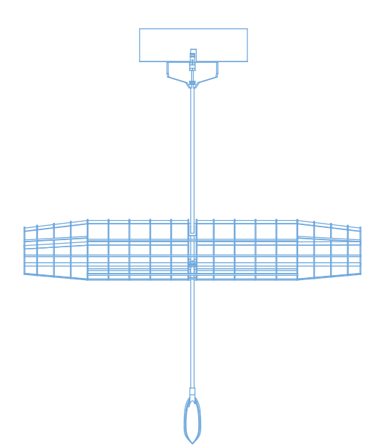
← Retour aux projets← Back to projectsPlaneur autonome : prototypage rapide et pilote automatique Autonomous glider: rapid prototyping and autopilot
Conception, fabrication et essais en vol d'un planeur de 1 m d'envergure optimisé pour le vol à vitesse minimale, stabilisé en tangage par un pilote automatique embarqué. Projet de dernière année du cycle ingénieur IPSA, réalisé en groupe avec Yoann Hoarau et Salomé Mathe. Design, build and flight testing of a 1 m wingspan glider optimized for minimum-speed flight, pitch-stabilized by an on-board autopilot. Final-year IPSA engineering project, carried out as a group with Yoann Hoarau and Salomé Mathe.

1. Mission et contraintes1. Mission and constraints
Le cahier des charges imposait une envergure d'au moins 1 mètre (les tiges de carbone structurelles ne pouvaient pas être coupées), le choix d'une mission parmi plusieurs (finesse max, vitesse max, etc.), et l'intégration d'un pilote automatique sur un axe (le tangage). Nous avons choisi d'optimiser le vol à vitesse minimale : les essais avaient lieu dans la volière drone de l'ENAC, longue d'environ 10 mètres, où un vol lent et stable est la configuration la plus pertinente, à la fois pour garantir un vol maîtrisé dans un espace restreint et pour mieux observer le comportement en vol. Ce choix se paie en finesse, en taux de chute et en stabilité, et il pilote toute la conception : minimiser la charge alaire et maximiser la portance (surface alaire et Cz max). The specification required a wingspan of at least 1 metre (the structural carbon rods could not be cut), a mission chosen among several options (max glide ratio, max speed, etc.), and a single-axis autopilot (pitch). We chose to optimize minimum-speed flight: the tests took place in ENAC's drone aviary, about 10 metres long, where slow, stable flight is the most relevant configuration, both to guarantee controlled flight in a confined space and to better observe the behaviour in flight. This choice costs glide ratio, sink rate and stability, and it drives the whole design: minimize wing loading and maximize lift (wing area and Cz max).
La méthodologie suivie est progressive : un fichier Excel développé pour le projet centralise tous les paramètres clés (géométrie des surfaces portantes, centrage, foyer global, surface alaire), XFLR5 sert à analyser le comportement aérodynamique et à affiner les choix, la CAO est réalisée sous Onshape, et les pièces sont fabriquées en prototypage rapide : découpe laser pour le balsa, impression 3D pour les pièces complexes. Cette chaîne courte a permis d'itérer rapidement entre les deux campagnes d'essais en vol. The methodology is progressive: a spreadsheet developed for the project centralizes all the key parameters (lifting surface geometry, balance, global neutral point, wing area), XFLR5 is used to analyse the aerodynamic behaviour and refine the choices, the CAD is done in Onshape, and the parts are produced by rapid prototyping: laser cutting for the balsa, 3D printing for the complex parts. This short loop made it possible to iterate quickly between the two flight-test campaigns.
2. Aérodynamique à bas nombre de Reynolds2. Low Reynolds number aerodynamics
Avec une corde de 80 à 200 mm et une vitesse cible de 10 à 25 km/h, le planeur vole entre Re = 2·10⁴ et 9·10⁴ : With a chord of 80 to 200 mm and a target speed of 10 to 25 km/h, the glider flies between Re = 2·10⁴ and 9·10⁴:
Dans ce régime, la couche limite reste laminaire longtemps, devient instable et sensible à la rugosité de surface, se sépare précocement puis redevient turbulente en formant une bulle de séparation laminaire : moins de portance, beaucoup plus de traînée, un risque de décrochage accru et un vol globalement plus difficile à contrôler. In this regime the boundary layer stays laminar for a long time, becomes unstable and sensitive to surface roughness, separates early and then transitions back to turbulent, forming a laminar separation bubble: less lift, much more drag, a higher stall risk and flight that is generally harder to control.
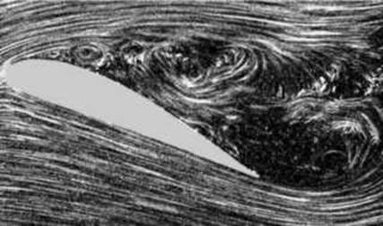
Un état de l'art des profils adaptés, appuyé sur la base de données UIUC Low-Speed Airfoil Tests (Selig et al.), distingue trois familles : les profils Selig (robustes, polyvalents, courbure modérée), les profils Drela (séries AG, SD et CH, optimisés sous XFOIL pour le régime laminaire, la série CH visant les Reynolds extrêmement faibles de 20 000 à 60 000) et les profils Eppler (design classique, faciles à construire, performants au-dessus de Re = 60 000). Cinq profils candidats ont été comparés sous XFLR5 / XFOIL à Re = 30 000, 40 000, 60 000 et 100 000 : A state-of-the-art review of suitable airfoils, based on the UIUC Low-Speed Airfoil Tests database (Selig et al.), distinguishes three families: Selig airfoils (robust, versatile, moderate camber), Drela airfoils (AG, SD and CH series, optimized with XFOIL for laminar behaviour, the CH series targeting extremely low Reynolds numbers of 20,000 to 60,000) and Eppler airfoils (classical design, easy to build, performing above Re = 60,000). Five candidate airfoils were compared in XFLR5 / XFOIL at Re = 30,000, 40,000, 60,000 and 100,000:
| ProfilAirfoil | ÉpaisseurThickness | CambrureCamber | FamilleFamily |
|---|---|---|---|
| CH10sm | 12,84 % | 10,20 % | Drela CH |
| davissm | 5,87 % | 5,91 % | AutreOther |
| K3311 | 11,00 % | 3,25 % | AutreOther |
| SD7032 | 9,96 % | 3,66 % | Selig-Drela |
| SD7037 | 9,20 % | 3,02 % | Selig-Drela |
Quatre critères guident la sélection : un Cz max élevé (maximiser la portance), un décrochage progressif atteint à forte incidence (réduire le risque de décrochage), un coefficient de moment stable en incidence (comportement en tangage homogène, correction plus simple), et une traînée minimale au voisinage de Cz max. Four criteria drive the selection: a high Cz max (maximize lift), a progressive stall reached at high incidence (reduce the stall risk), a moment coefficient that is stable across incidence (homogeneous pitch behaviour, simpler correction), and minimal drag in the vicinity of Cz max.

Le CH10sm l'a emporté : Cz max d'environ 1,6, décrochage progressif (courbe arrondie au sommet, l'assurance de voler lentement sans perdre brusquement la portance), et un coefficient de moment remarquablement plat entre 2° et 15°, donc un centre de poussée fixe et un vol prévisible même en rafale. Le davissm avait une traînée plus faible et un Cz comparable, mais son décrochage instable et précoce l'a disqualifié : dans notre contexte, la douceur du décrochage vaut plus que la traînée. La contrepartie du CH10sm est un fort moment piqueur (Cm ≈ -0,20), conséquence directe de sa forte cambrure, qui exige un bras de levier de queue et un empennage bien dimensionnés. The CH10sm won: Cz max of about 1.6, progressive stall (rounded lift-curve top, the guarantee of flying slowly without suddenly losing lift), and a remarkably flat moment coefficient between 2° and 15°, hence a fixed centre of pressure and predictable flight even in gusts. The davissm airfoil had lower drag and a comparable Cz, but its unstable, early stall disqualified it: in our context, stall gentleness is worth more than drag. The CH10sm's trade-off is a strong nose-down moment (Cm ≈ -0.20), a direct consequence of its high camber, which demands a properly sized tail lever arm and stabilizer.

3. Dimensionnement et géométrie3. Sizing and geometry
Le CH10sm atteint son Cz max de 1,6 à 18° d'incidence, mais le Cz y est instable : l'incidence cible est fixée à 16°, correspondant à Cz = 1,4. Pour une vitesse de croisière visée de 5 m/s, la surface portante nécessaire découle de l'équilibre portance-poids : The CH10sm reaches its Cz max of 1.6 at 18° incidence, but Cz is unstable there: the target incidence is set at 16°, corresponding to Cz = 1.4. For a 5 m/s target cruise speed, the required lifting surface follows from the lift-weight balance:
Le calage de l'aile a été poussé à 6° (contre 4° usuels) pour réduire l'assiette et la traînée du fuselage en vol lent ; il se matérialise par un trou carré incliné de 6° dans toutes les nervures, avec une réserve mécanique de -3° dans la pièce d'attache principale si l'incidence s'avérait excessive. L'aile est en deux parties : une aile interne de 180 mm de corde et 310 mm de demi-envergure, où la tige de carbone passe à 25 % de la corde (le centre aérodynamique, pour annuler la torsion induite par le moment de tangage), et une aile externe effilée jusqu'à 140 mm au saumon (effilement 0,778) avec une flèche de 5° et un dièdre de 1,06° seulement. 140 mm est la corde minimale acceptable : en dessous, l'épaisseur du profil se rapproche de la section de la tige et il ne reste plus les 3 mm de balsa nécessaires autour du trou pour que la nervure ne se fissure pas. Cet effilement rapproche la répartition de portance de la distribution elliptique optimale : l'aile travaille de manière homogène sur toute son envergure. The wing setting angle was pushed to 6° (versus the usual 4°) to lower the fuselage attitude and its drag in slow flight; it materializes as a square hole tilted by 6° in every rib, with a mechanical fallback of -3° in the main attachment part in case the incidence proved excessive. The wing is built in two parts: an inner wing with a 180 mm chord and 310 mm half-span, where the carbon rod passes at 25% chord (the aerodynamic centre, cancelling the torsion induced by the pitching moment), and an outer wing tapering to 140 mm at the tip (taper ratio 0.778) with 5° sweep and only 1.06° dihedral. 140 mm is the minimum acceptable chord: below it, the airfoil thickness approaches the rod's cross-section and the 3 mm of balsa needed around the hole to keep the rib from cracking are no longer there. This taper brings the lift distribution close to the optimal elliptical one: the wing works homogeneously across its whole span.
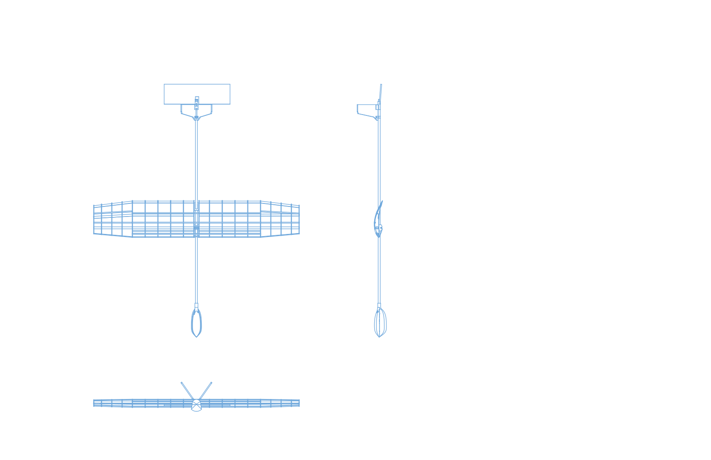
L'ensemble est vérifié sous XFLR5 : le modèle complet (aile, empennage, fuselage) confirme les performances attendues au point de vol cible, et donne la position du foyer global qui servira au centrage. Everything is checked in XFLR5: the complete model (wing, tail, fuselage) confirms the expected performance at the target flight point, and gives the position of the global neutral point used for balancing.
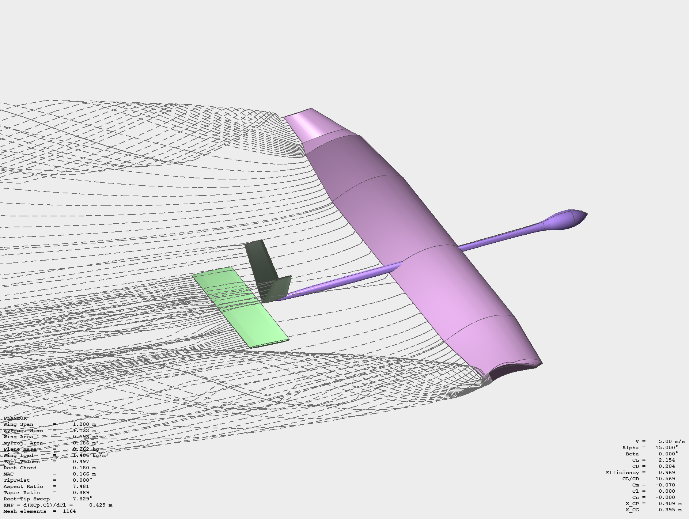
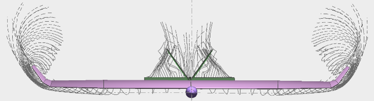
4. Stabilité : winglets, empennage et centrage4. Stability: winglets, tail and balance
La tige de carbone rectiligne interdit tout dièdre d'aile significatif (1,06° seulement), et les analyses de stabilité dynamique XFLR5 le confirment : le mode spiral est instable. En cas d'inclinaison, le planeur tend à accentuer son virage au lieu de revenir à plat. Premier remède étudié : des winglets inclinés à 35°, qui agissent sur trois paramètres à la fois : augmentation du dièdre effectif, optimisation de l'effilement et gain de surface portante. Les analyses XFLR5 montrent que le mode spiral reste instable, mais que la divergence en roulis est nettement ralentie : le dièdre effectif va dans la bonne direction. The straight carbon rod forbids any significant wing dihedral (only 1.06°), and XFLR5 dynamic stability analyses confirm the consequence: the spiral mode is unstable. When banked, the glider tends to tighten its turn instead of returning to level. First remedy studied: winglets tilted at 35°, which act on three parameters at once: increased effective dihedral, improved taper and extra lifting surface. The XFLR5 analyses show the spiral mode remains unstable, but the roll divergence is markedly slowed: the effective dihedral goes in the right direction.
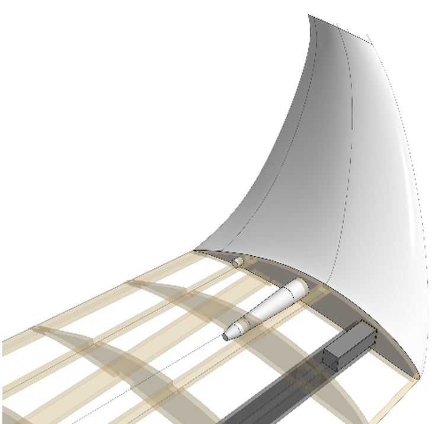
Le second levier est l'empennage, dimensionné par une analyse comparative XFLR5 entre deux configurations découpées dans du balsa de 5 mm. La configuration classique (stabilisateur horizontal + dérive verticale) présente un temps de doublement du mode spiral de 15 s et un amortissement de phugoïde de 0,33. Le passage à un empennage en V introduit du dièdre effectif à l'arrière du centre de gravité sans modifier la structure de l'aile : le temps de doublement passe à 40 s et l'amortissement de phugoïde à 0,43, une plateforme nettement plus stable pour le vol lent. En vol, les deux configurations se sont montrées satisfaisantes, la dérive verticale conservant même un léger avantage en lacet sur 10 mètres. The second lever is the tail, sized through a comparative XFLR5 analysis between two configurations cut from 5 mm balsa. The classical configuration (horizontal stabilizer + vertical fin) has a spiral-mode doubling time of 15 s and a phugoid damping ratio of 0.33. Switching to a V-tail introduces effective dihedral behind the centre of gravity without touching the wing structure: the doubling time rises to 40 s and the phugoid damping to 0.43, a markedly more stable platform for slow flight. In flight, both configurations proved satisfactory, the vertical fin even keeping a slight edge in yaw over 10 metres.
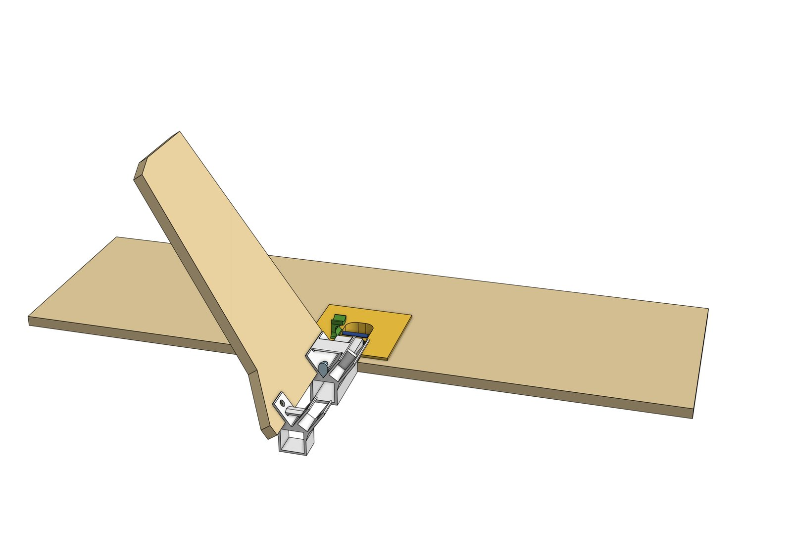
Ce grand empennage, choisi pour garder de l'autorité de gouverne à basse vitesse, a un coût : son bras de levier tire le centre de gravité vers l'arrière. L'analyse de masses sans cockpit révèle un centrage beaucoup trop arrière, incompatible avec la stabilité. Obtenir le centrage légèrement avant indispensable devient alors un objectif de conception du fuselage lui-même. This large tail, chosen to keep control authority at low speed, has a cost: its lever arm pulls the centre of gravity rearward. The mass analysis without the cockpit reveals a balance far too aft, incompatible with stability. Achieving the essential slightly-forward balance then becomes a design objective for the fuselage itself.
5. Fuselage : deux itérations de cockpit5. Fuselage: two cockpit iterations
Pour dimensionner le fuselage au plus juste, les modèles CAO des équipements réels (cartes Arduino assemblées, batterie 3,7 V 250 mAh, servomoteur 5 g) ont été reproduits sous Onshape. Première itération : installer le servomoteur dans l'aile pour économiser la masse du cockpit, dont la demi-hauteur descend à 118 mm. Mais cette architecture fixe la distance entre le servomoteur et l'empennage : elle interdit le centrage manuel du planeur par translation de l'aile sur la tige, et il manque toujours de la masse à l'avant ; un logement pour une bille d'acier avait même été prévu en dernier recours. To size the fuselage tightly, CAD models of the real equipment (assembled Arduino boards, 3.7 V 250 mAh battery, 5 g servo) were reproduced in Onshape. First iteration: install the servo inside the wing to save cockpit mass, bringing the cockpit half-height down to 118 mm. But this architecture fixes the distance between the servo and the tail: it forbids balancing the glider manually by sliding the wing along the rod, and mass is still missing at the nose; a housing for a steel ball was even planned as a last resort.
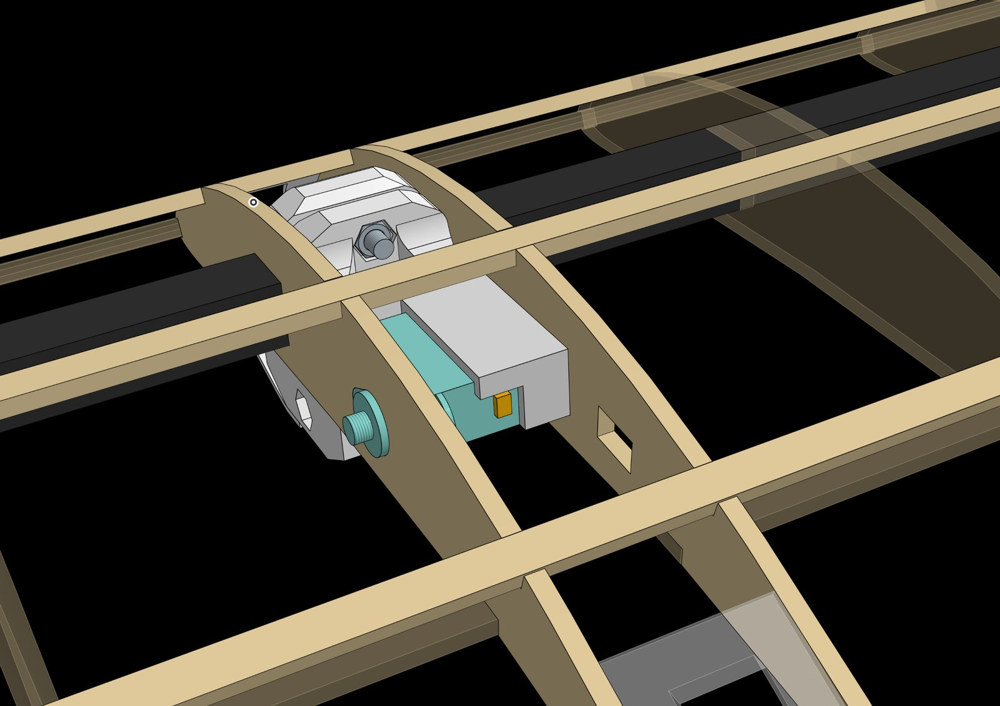
Seconde itération : ramener le servomoteur à l'avant, dans le cockpit. La coque grandit (mi-hauteur de 143 mm, 37 g à vide) mais la masse ajoutée à l'avant sert directement le centrage, et surtout la distance servo-empennage devient constante quelle que soit la position de l'aile : le planeur peut être centré en faisant glisser l'aile, et des méthodes de commande éprouvées de l'aéromodélisme deviennent possibles (pull-string et pull-pull, détaillées en section 7). Seule concession : les cordes à piano de 1 m sont trop courtes pour rejoindre l'empennage, remplacées par du fil de nylon de 0,4 mm. Second iteration: bring the servo back to the front, inside the cockpit. The shell grows (143 mm half-height, 37 g empty) but the mass added at the nose directly serves the balance, and above all the servo-to-tail distance becomes constant regardless of the wing position: the glider can be balanced by sliding the wing, and proven model-aircraft control schemes become possible (pull-string and pull-pull, detailed in section 7). Only concession: 1 m piano wires are too short to reach the tail, replaced by 0.4 mm nylon line.
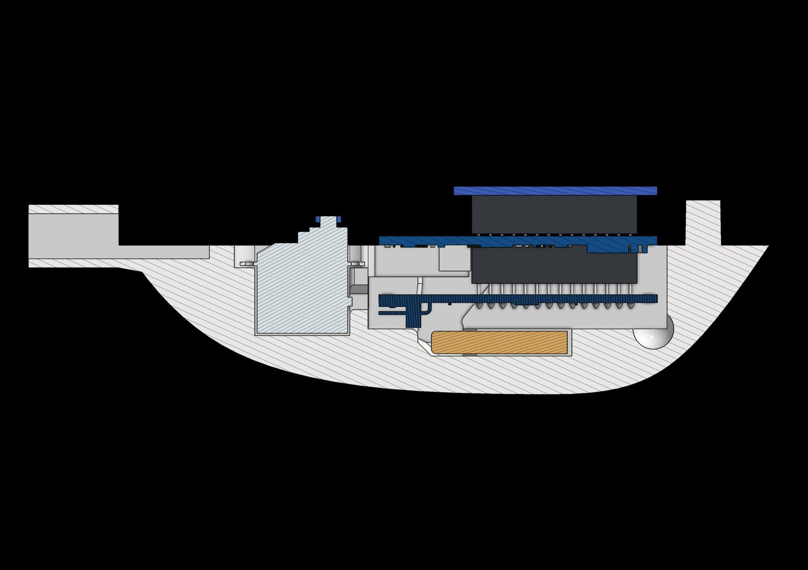
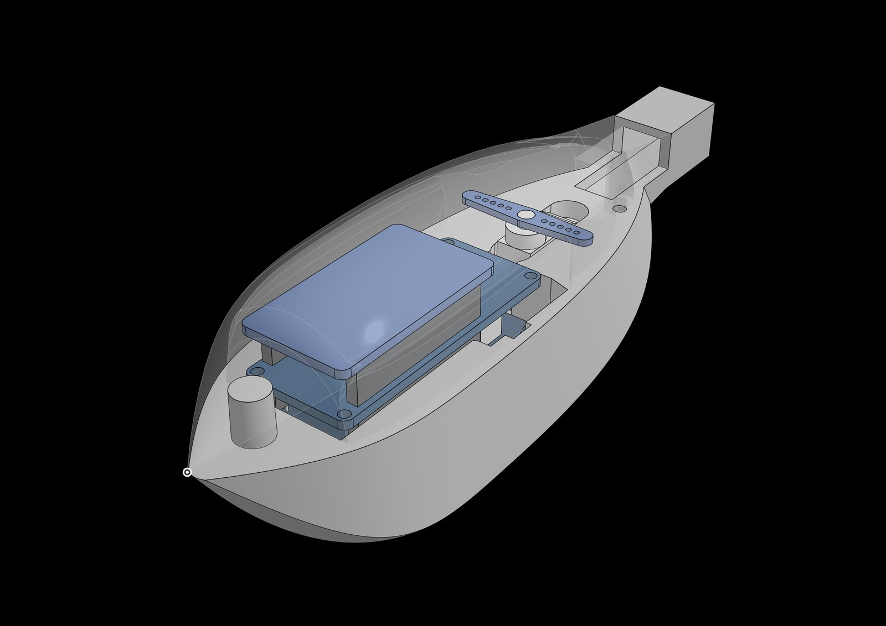
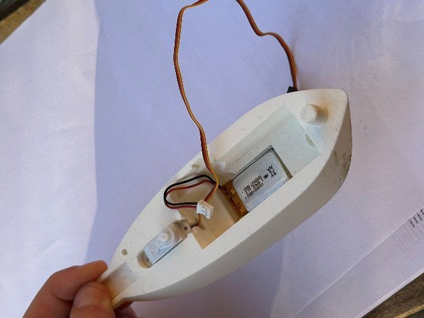
La première version a volé lors du premier essai ; son logement électronique ne prenait toutefois pas en compte l'épaisseur du proto shield, ce qui a empêché d'embarquer l'enregistreur de données au vol n°1. Le cockpit final corrige ce point pour la seconde campagne. The first version flew during the first test; its electronics bay, however, did not account for the proto shield's thickness, which prevented the data logger from being carried on flight #1. The final cockpit fixes this for the second campaign.
6. Structure et fabrication6. Structure and manufacturing
Le matériel imposé : deux tiges de carbone creuses de 10 × 10 × 1000 mm (paroi de 1 mm), deux planches de balsa de 2,5 mm et une de 5 mm, un rouleau d'entoilage thermorétractable Oracover et 1 kg de filament PLA Aero pour une Bambulab A1. Pour l'aile, deux options : tout imprimer en PLA Aero (simple, mais 440 à 1170 kg/m³ selon la température d'impression) ou construire à l'ancienne, nervures et lisses en balsa (140 kg/m³, trois fois plus léger, mais plus fragile). La contrainte de charge alaire tranche pour le balsa découpé au laser, entoilé d'Oracover ; l'empennage est découpé dans le balsa de 5 mm, et les pièces complexes (cockpit, attaches, guides) sont imprimées en 3D. The imposed material: two hollow 10 × 10 × 1000 mm carbon rods (1 mm wall), two 2.5 mm balsa boards and one 5 mm board, a roll of Oracover heat-shrink covering film and 1 kg of PLA Aero filament for a Bambulab A1. For the wing, two options: print everything in PLA Aero (simple, but 440 to 1170 kg/m³ depending on print temperature) or build the traditional way, balsa ribs and stringers (140 kg/m³, three times lighter, but more fragile). The wing-loading constraint settles it: laser-cut balsa covered with Oracover; the tail is cut from the 5 mm balsa, and the complex parts (cockpit, attachments, guides) are 3D-printed.
La découpeuse laser n'acceptant que 70 cm, les planches ont été recoupées et l'agencement des pièces optimisé sur les fichiers de découpe : nervures en doublons pour absorber les casses d'assemblage, et nervures critiques reportées sur la planche de 5 mm pour un gain structurel à masse négligeable. Since the laser cutter only accepts 70 cm, the boards were re-cut and the part layout optimized on the cutting files: duplicate ribs to absorb assembly breakage, and critical ribs moved to the 5 mm board for a structural gain at negligible mass.
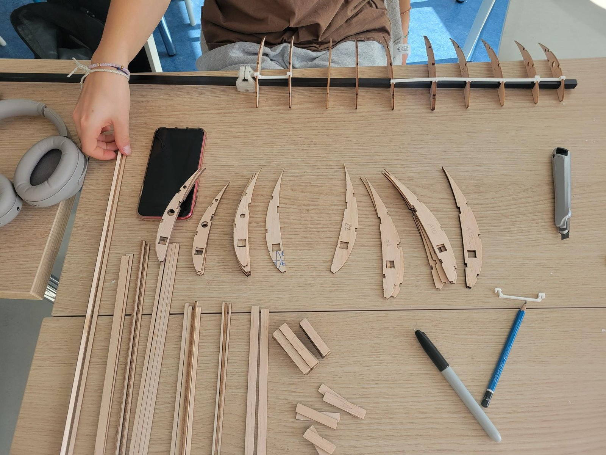
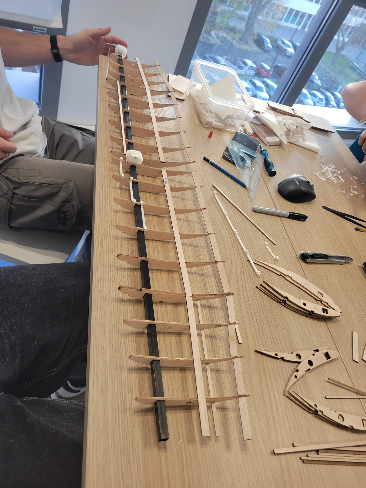
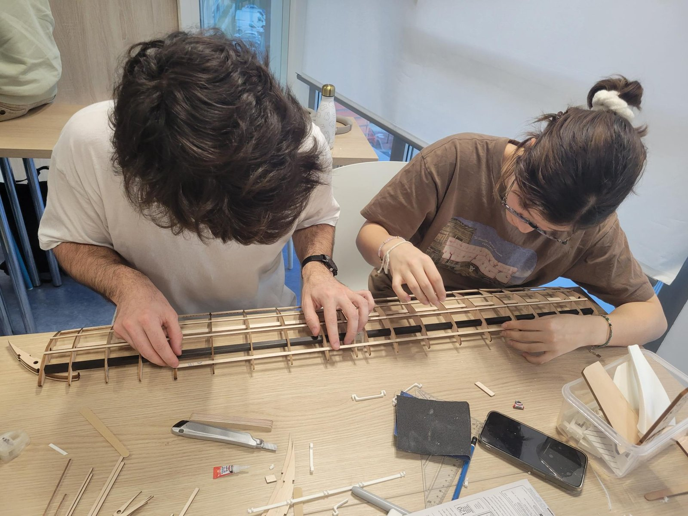
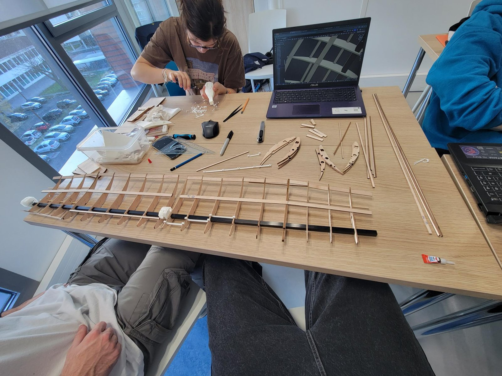
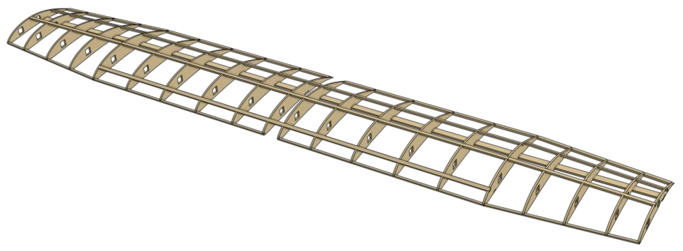
Une casse est venue valider l'intérêt de l'analyse structurelle : la pièce centrale, qui maintient les deux tiges perpendiculaires et reprend tous les efforts de torsion du planeur, s'est fissurée au serrage de ses vis M3. L'analyse sous CATIA V5 montre une compression dans un angle (zone blanchie observée sur la pièce) et une traction dans l'angle opposé, précisément dans un plan défavorable au sens d'impression 3D, là où la pièce a rompu. Elle a été réimprimée en PETG, plus tenace, dans une orientation d'impression adaptée aux efforts. One failure validated the value of structural analysis: the central part, which holds the two rods perpendicular and carries all the glider's torsional loads, cracked when its M3 screws were tightened. The CATIA V5 analysis shows compression in one corner (a whitened zone observed on the part) and tension in the opposite corner, precisely in a plane unfavourable to the 3D print orientation, where the part failed. It was reprinted in PETG, tougher, with a print orientation matched to the loads.
Vient ensuite l'entoilage, thermocollé au fer à repasser. Les lisses y révèlent leur seconde fonction : réparties sur toute l'envergure, elles offrent les points d'ancrage qui assurent une mise sous tension uniforme du film, garantissant une surface sans pli et la courbure aérodynamique voulue. Leçon apprise en passant : ne pas oublier de retirer le film protecteur transparent de l'Oracover, qui l'empêche de coller à la chaleur. Then comes the covering, heat-bonded with a clothes iron. The stringers reveal their second function here: spread across the whole span, they provide the anchor points that ensure uniform film tension, guaranteeing a wrinkle-free surface and the intended aerodynamic curvature. Lesson learned along the way: do not forget to remove the Oracover's transparent backing film, which prevents it from bonding under heat.
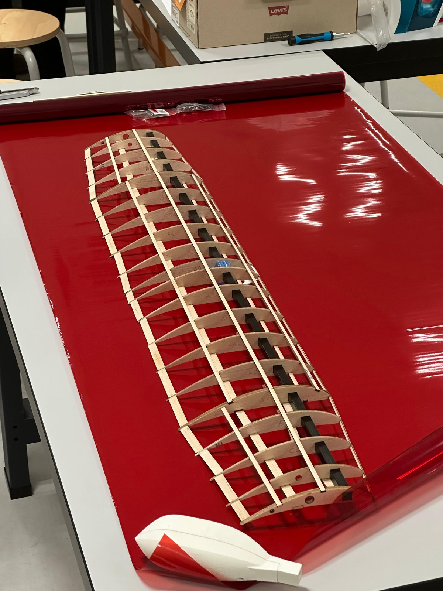
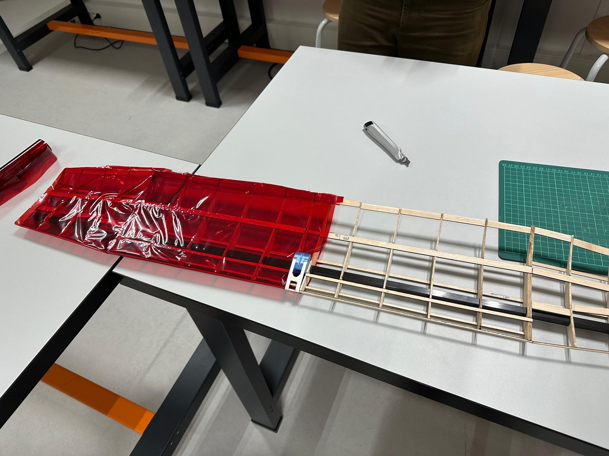
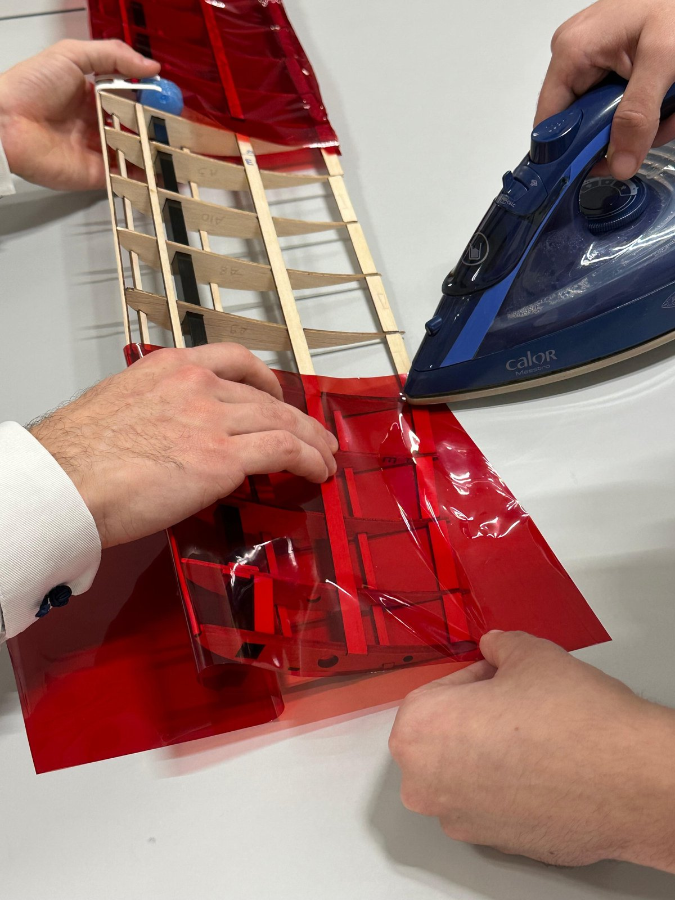
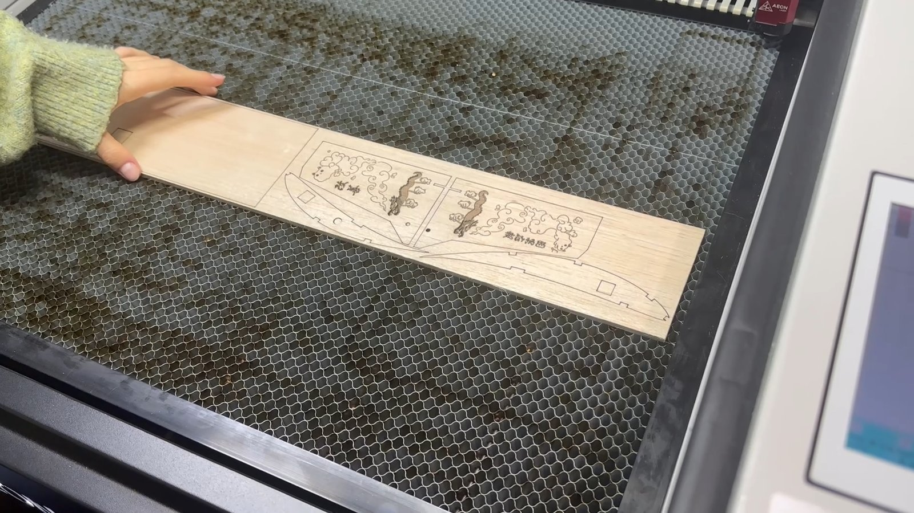
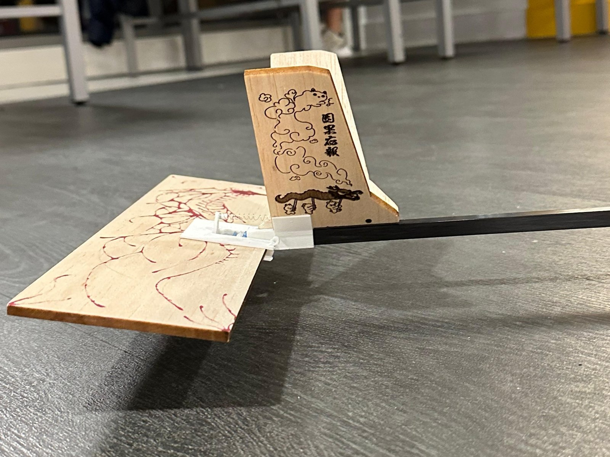
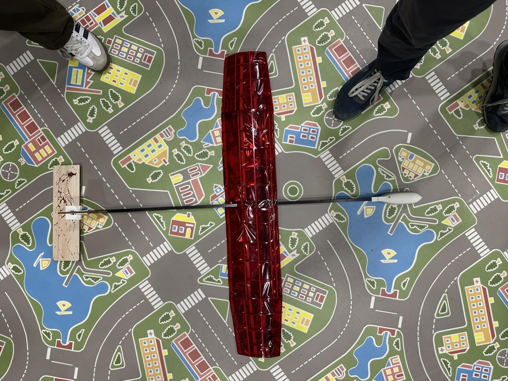
7. Électronique embarquée et commande de gouverne7. On-board electronics and control linkage
Le système embarqué repose sur un Arduino MKR WiFi 1010, un shield MKR IMU (accéléromètre et gyroscope) et un MKR SD proto shield, pilotant un servomoteur Protonik Digital 7341 NG-D de 5 g relié à l'empennage horizontal par fil de nylon de 0,4 mm. Le proto shield sert de support de câblage : les fils du servomoteur y sont soudés sur trois broches (VCC, GND et la sortie A2 qui génère le signal de commande), ce qui évite toute modification directe des cartes Arduino et IMU (la promotion ne disposait que de deux exemplaires, partagés entre les groupes). The on-board system is built around an Arduino MKR WiFi 1010, an MKR IMU shield (accelerometer and gyroscope) and an MKR SD proto shield, driving a 5 g Protonik Digital 7341 NG-D servo linked to the horizontal tail with 0.4 mm nylon line. The proto shield serves as the wiring platform: the servo wires are soldered onto three pins (VCC, GND and the A2 output that generates the command signal), avoiding any direct modification of the Arduino and IMU boards (the class only had two of them, shared between the groups).
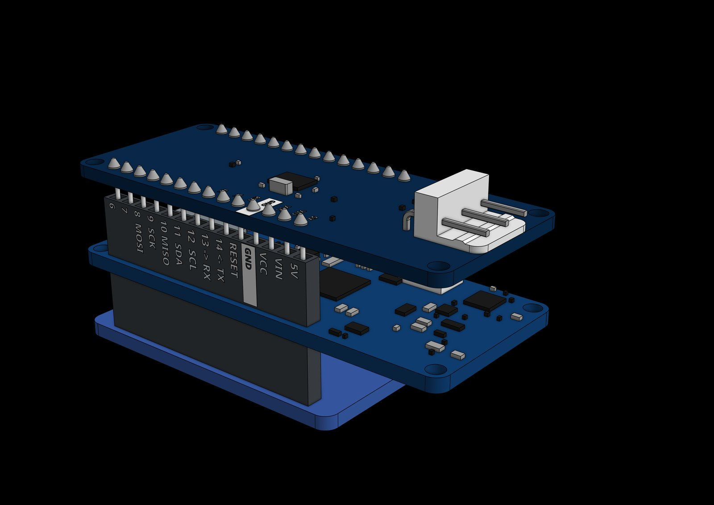

Deux liaisons servo-gouverne ont été testées en vol. Le pull-string (un fil de traction contre un ressort de torsion logé dans la gouverne) est léger et simple à installer, mais s'est révélé mauvais en vol : malgré un ressort très tendu, la gouverne ne faisait qu'osciller. Le pull-pull l'a remplacé pour la seconde campagne : deux fils montés en opposition sur un palonnier de servo double, chaque extrémité reliée à un côté du guignol de gouverne. Quand un fil tire, l'autre se détend de manière synchrone. Résultat : aucune zone morte au neutre, jeu mécanique éliminé en tendant fermement les fils sans surcharger le servo, oscillations totalement supprimées, et la légère élasticité du nylon agit comme un amortisseur naturel qui protège les pignons du servo des chocs sur la gouverne au sol. Two servo-to-surface linkages were flight-tested. The pull-string (one traction line against a torsion spring housed in the control surface) is light and simple to install, but proved poor in flight: despite a very tight spring, the surface just kept oscillating. The pull-pull replaced it for the second campaign: two lines mounted in opposition on a double servo horn, each end tied to one side of the control horn. When one line pulls, the other releases synchronously. Result: no dead zone around neutral, mechanical play eliminated by firmly tensioning the lines without overloading the servo, oscillations completely gone, and the nylon's slight elasticity acts as a natural damper protecting the servo gears from ground knocks on the surface.
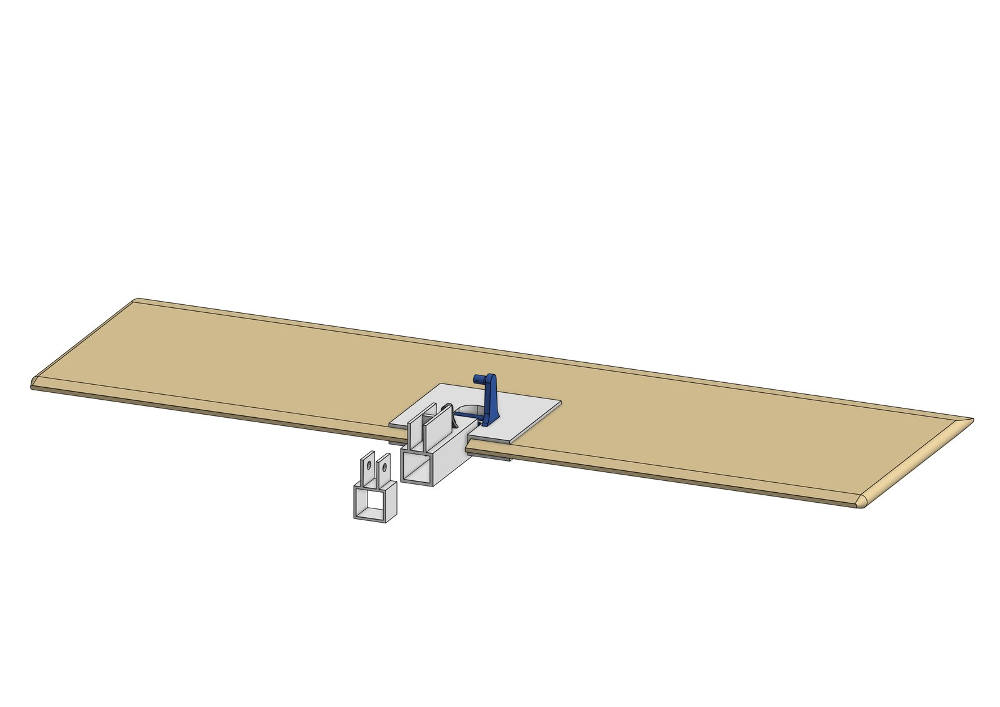
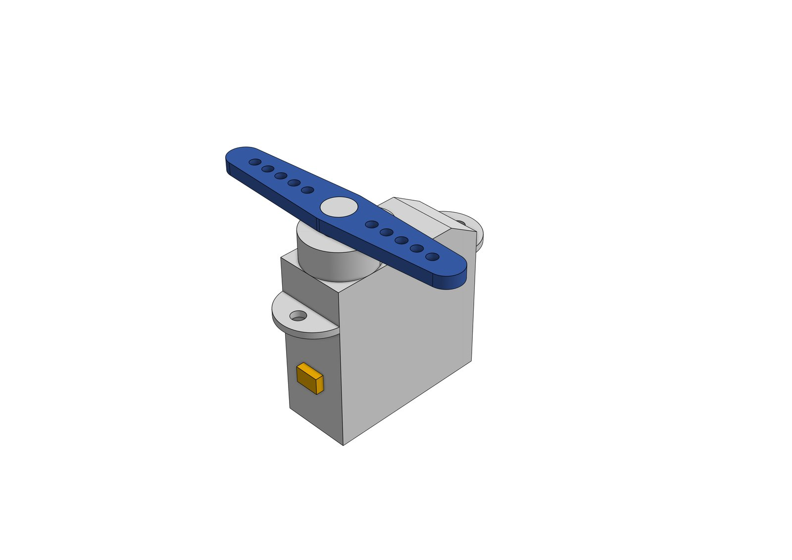
Un enregistreur de données embarqué complète le système : il capture accélérations et vitesses angulaires à 50 Hz pendant 10 secondes (500 échantillons en mémoire flash) ; le planeur génère ensuite son propre point d'accès WiFi et les données se téléchargent en CSV ou JSON via une petite interface web à l'adresse 192.168.4.1. Un script Python à base de filtre de Kalman étendu a tenté de reconstruire la trajectoire 3D à partir de ces données : les échelles obtenues étaient aberrantes (des centaines de mètres pour un déplacement de quelques centimètres). Conclusion utile pour la suite : l'IMU seule excelle pour l'attitude et les rotations, mais ne peut pas servir d'outil de trajectographie sans capteur complémentaire. An on-board data logger completes the system: it captures accelerations and angular rates at 50 Hz for 10 seconds (500 samples in flash memory); the glider then spawns its own WiFi access point and the data is downloaded as CSV or JSON through a small web interface at 192.168.4.1. A Python script based on an extended Kalman filter attempted to reconstruct the 3D trajectory from this data: the resulting scales were absurd (hundreds of metres for a few centimetres of motion). A useful conclusion for what follows: the IMU alone excels at attitude and rotations, but cannot serve as a trajectory-reconstruction tool without a complementary sensor.
8. Le pilote automatique : pourquoi un PID sans modèle8. The autopilot: why a model-free PID
Le rôle du pilote automatique est d'assurer une stabilisation active en tangage : maintenir une assiette constante correspondant à l'incidence de portance maximale, compenser les perturbations (lancers à la main imprécis, léger décentrage, vibrations) et empêcher les oscillations de phugoïde qui dégradent la finesse moyenne et mènent au décrochage. Sur un vol de 10 m, on n'observe qu'environ une demi-période de cette oscillation. The autopilot's role is active pitch stabilization: hold a constant attitude matching the maximum-lift incidence, compensate for disturbances (imprecise hand launches, slight off-balance, vibrations) and prevent the phugoid oscillations that degrade the average glide ratio and lead to stall. Over a 10 m flight, only about half a period of that oscillation is visible.
L'approche théorique classique (représentation d'état, retour d'état calculé sur les dérivées de stabilité) suppose des coefficients aérodynamiques connus et un modèle linéarisé autour d'un point d'équilibre. À très bas Reynolds, ces coefficients sont instables et non linéaires (décollements, bulles laminaires) : impossible de les estimer de façon fiable avec XFLR5, et un contrôleur calculé sur un modèle faux devient inopérant. Nous avons donc écarté la commande par retour d'état au profit d'un correcteur PID sans modèle : il ne réagit qu'à l'erreur entre l'assiette mesurée par l'IMU et la consigne, et ses gains se règlent expérimentalement, lancer après lancer. The classical theoretical approach (state-space model, state feedback computed from stability derivatives) assumes known aerodynamic coefficients and a model linearized around an equilibrium point. At very low Reynolds numbers these coefficients are unstable and nonlinear (separation, laminar bubbles): they cannot be reliably estimated with XFLR5, and a controller computed on a wrong model becomes inoperative. We therefore set aside conventional state feedback in favour of a model-free PID controller: it only reacts to the error between the IMU-measured attitude and the setpoint, and its gains are tuned experimentally, launch after launch.
L'asservissement tourne à 100 Hz sur l'Arduino (T = 10 ms) : l'IMU fournit l'angle de
tangage, l'erreur par rapport à la consigne (TARGET_PITCH = 0, vol à
plat) alimente le PID, et une fonction de mapping asymétrique
convertit la sortie en angle servo dans les limites mécaniques de la gouverne : le
neutre est calé à 133°, les corrections à cabrer sont mappées entre 133° et 80°, les
corrections à piquer entre 133° et 180°. Cette transposition garantit qu'aucune
commande destructive pour la liaison pull-pull n'est jamais envoyée. Gains retenus :
Kp = 2,0 pour la réactivité immédiate, Ki = 0,2 pour trimmer
automatiquement l'erreur statique due au centrage ou au calage, Kd = 0,1
pour amortir les oscillations et éviter le dépassement.
The control loop runs at 100 Hz on the Arduino (T = 10 ms): the IMU provides the
pitch angle, the error against the setpoint (TARGET_PITCH = 0, level
flight) feeds the PID, and an asymmetric mapping function converts
the output into a servo angle within the control surface's mechanical limits: neutral
is set at 133°, nose-up corrections are mapped between 133° and 80°, nose-down
corrections between 133° and 180°. This transposition guarantees that no command
destructive to the pull-pull linkage is ever sent. Selected gains:
Kp = 2.0 for immediate reactivity, Ki = 0.2 to automatically
trim the static error caused by balance or setting angle, Kd = 0.1 to damp
oscillations and avoid overshoot.
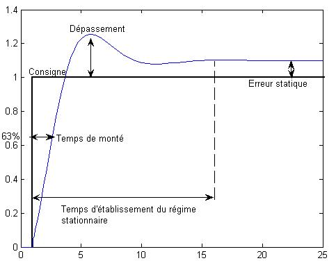
Le réglage s'est fait lancer après lancer, en s'appuyant sur l'effet classique de chaque gain sur la réponse : Tuning was done launch after launch, guided by each gain's classical effect on the response:
| GainGain | Temps de montéeRise time | DépassementOvershoot | Temps de réponseSettling time | Erreur statiqueStatic error |
|---|---|---|---|---|
| Kp = 2,0 | DiminueDecreases | AugmenteIncreases | Faible effetSmall effect | DiminueDecreases |
| Ki = 0,2 | DiminueDecreases | AugmenteIncreases | AugmenteIncreases | ÉlimineEliminates |
| Kd = 0,1 | Faible diminutionSmall decrease | DiminueDecreases | DiminueDecreases | Aucun effetNo effect |
9. Essais en vol et résultats9. Flight tests and results
Vol n°1 - 10 décembre 2025 : le retour d'expérienceFlight #1 - 10 December 2025: lessons learned
Première campagne dans la volière drone de l'ENAC (10 × 10 m, hauteur suffisante pour des lancers à la main), sans électronique embarquée : nous avons appris sur place que le proto shield devait coiffer les broches de l'Arduino pour les protéger, et le premier cockpit ne prévoyait pas cette épaisseur. La séance a surtout été un crash-test structurel : rupture du pas de vis du fuselage sous les chocs répétés des rattrapages, casse d'une pièce d'attache après une chute verticale de 20 cm sur l'empennage, rupture de la lisse du bord d'attaque sur un câble tendu de la volière, et casse de la fixation avant d'un winglet lors d'une collision, sans dégât sur le winglet lui-même. First campaign in ENAC's drone aviary (10 × 10 m, enough height for hand launches), without on-board electronics: we learned on site that the proto shield had to cap the Arduino's pins to protect them, and the first cockpit did not allow for that thickness. The session was above all a structural crash-test: the fuselage's screw thread failed under repeated catch impacts, an attachment part broke after a 20 cm vertical drop onto the tail, the leading-edge stringer snapped on one of the aviary's tensioned cables, and a winglet's front fixture broke in a collision, with no damage to the winglet itself.
Les leçons aérodynamiques valaient autant que les casses : la surface de gouverne s'est révélée trop grande (un trim d'environ 15° à cabrer faisait cabrer le planeur malgré un centrage très avant) ; sans empennage horizontal le planeur n'est pas stable en tangage (l'effet piqueur ou cabreur s'amplifie doucement) ; sur 10 mètres, aucune différence mesurable entre les vols avec et sans winglets ; et les bords d'attaque des empennages, laissés bruts, méritaient d'être arrondis. D'où la liste de travail d'inter-campagne : refonte du fuselage pour intégrer toute l'électronique et déplacer le servomoteur, passage au pull-pull, ponçage des bords d'attaque, renforcement du bord d'attaque de l'aile, test du pilote automatique au sol et vérification systématique du centrage après intégration de l'électronique. The aerodynamic lessons were worth as much as the breakage: the control surface proved too large (a roughly 15° nose-up trim pitched the glider up despite a very forward balance); without the horizontal tail the glider is not pitch-stable (the nose-up or nose-down tendency slowly amplifies); over 10 metres, no measurable difference between flights with and without winglets; and the tails' leading edges, left raw, deserved rounding. Hence the inter-campaign work list: fuselage redesign to integrate all the electronics and move the servo, switch to the pull-pull linkage, sanding of the leading edges, reinforcement of the wing's leading edge, ground testing of the autopilot and systematic balance checks after integrating the electronics.
Vol n°2 - 14 janvier 2026 : le pilote automatique en conditions réellesFlight #2 - 14 January 2026: the autopilot in real conditions
Même volière, mais avec un moyen d'essai supplémentaire : des caméras infrarouges
enregistrant la position du planeur en vol, qui permettent une analyse
comparative quantitative entre vols libres (NPA) et vols sous pilote
automatique (PA). Un seul incident structurel : la pièce du cockpit recevant la barre
de fixation s'est fissurée (encore un sens d'impression 3D défavorable), mais la vis
et les frottements ont maintenu l'ensemble en place jusqu'à la fin des essais. Côté
analyse, un script Python isole automatiquement les phases de vol dans les
enregistrements par détection de pics (scipy.signal.find_peaks) sur la
vitesse absolue : le lancer et la réception génèrent chacun un pic net qui borne la
phase de vol plané.
Same aviary, but with an additional test asset: infrared cameras recording the
glider's position in flight, enabling a quantitative comparative
analysis between free flights (no autopilot) and autopilot-assisted flights.
A single structural incident: the cockpit part receiving the fixing bar cracked (yet
another unfavourable 3D print orientation), but the screw and friction held everything
in place until the end of the tests. On the analysis side, a Python script
automatically isolates the flight phases in the recordings through peak detection
(scipy.signal.find_peaks) on the absolute speed: launch and landing each
generate a clean peak that bounds the gliding phase.


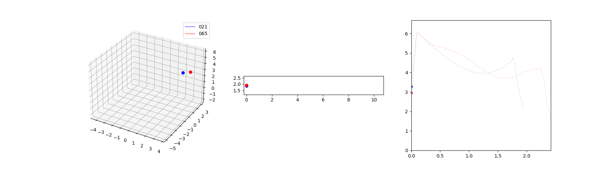

Le pilote automatique s'est montré efficace dès le lancer, avec des corrections nettes et visibles en vol : il empêche le nez de monter excessivement à la phase de lancement, soutient le planeur en phase de plané, lisse la trajectoire en cloche du vol libre et évite la conversion brutale d'énergie cinétique en énergie potentielle qui menait au décrochage. Testé ensuite en extérieur, le planeur a dépassé les 10 mètres de vol stable. La stratégie pragmatique (un PID réglé expérimentalement plutôt qu'une synthèse théorique sur des paramètres incertains) est validée par les données. The autopilot proved effective from the moment of launch, with clear, visible corrections in flight: it keeps the nose from rising excessively during the launch phase, supports the glider during the glide, smooths out the free flight's bell-shaped trajectory and prevents the brutal kinetic-to-potential energy conversion that led to stall. Tested outdoors afterwards, the glider exceeded 10 metres of stable flight. The pragmatic strategy (an experimentally tuned PID rather than a theoretical synthesis built on uncertain parameters) is validated by the data.
10. Bilan10. Takeaways
Ce projet couvre la chaîne complète de l'ingénierie aéronautique à petite échelle : état de l'art, dimensionnement théorique, simulation (XFLR5), CAO (Onshape, CATIA V5), prototypage rapide (découpe laser, impression 3D), électronique embarquée, loi de commande et validation expérimentale par deux campagnes d'essais en vol. Chaque casse structurelle et chaque instabilité ont conduit à une itération de conception documentée : sens d'impression des pièces chargées, refonte du cockpit, passage au pull-pull, ponçage des bords d'attaque. Parmi les perspectives : un tube de Pitot ou un système de positionnement externe pour affiner la loi de commande (l'IMU seule ayant montré ses limites pour la trajectographie), dans les limites d'un projet de trois mois. Projet encadré par M. Chauvat (IPSA) ; essais réalisés dans la volière drone de l'ENAC. This project covers the complete small-scale aeronautical engineering chain: state-of-the-art review, theoretical sizing, simulation (XFLR5), CAD (Onshape, CATIA V5), rapid prototyping (laser cutting, 3D printing), embedded electronics, control law and experimental validation through two flight-test campaigns. Every structural failure and every instability led to a documented design iteration: print orientation of loaded parts, cockpit redesign, switch to the pull-pull linkage, sanding of the leading edges. Among the perspectives: a Pitot tube or an external positioning system to refine the control law (the IMU alone having shown its limits for trajectory reconstruction), within the limits of a three-month project. Project supervised by Mr Chauvat (IPSA); tests carried out in ENAC's drone aviary.
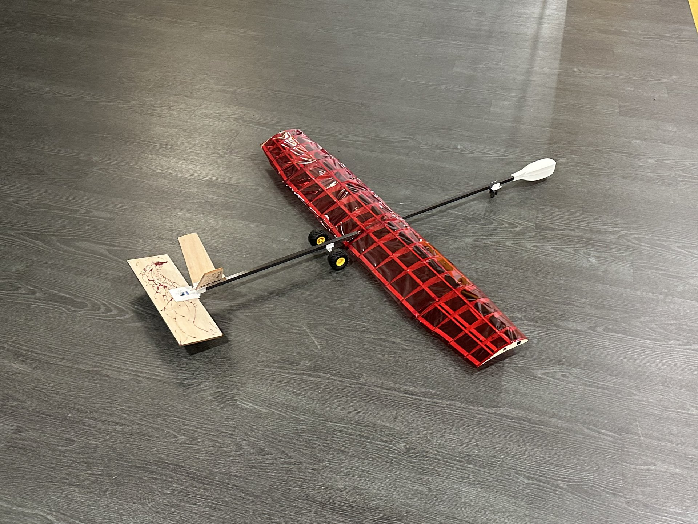